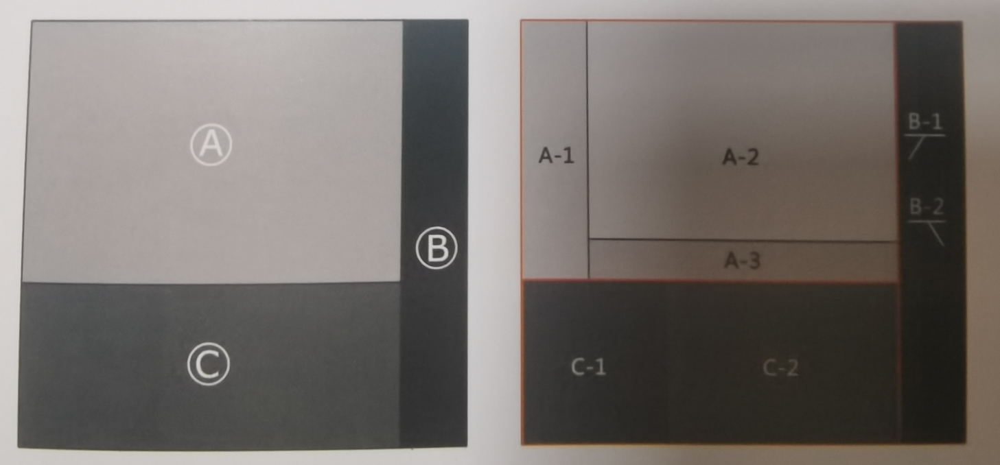
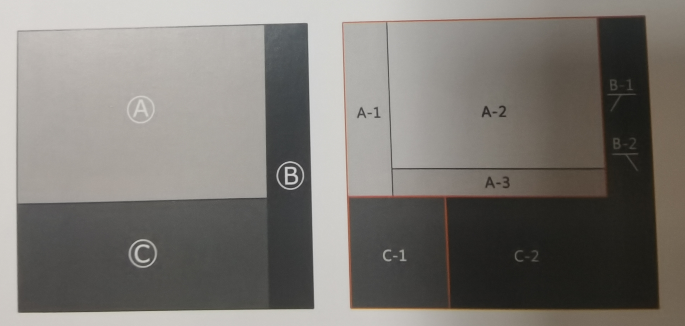
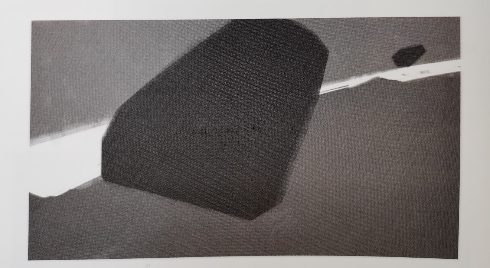
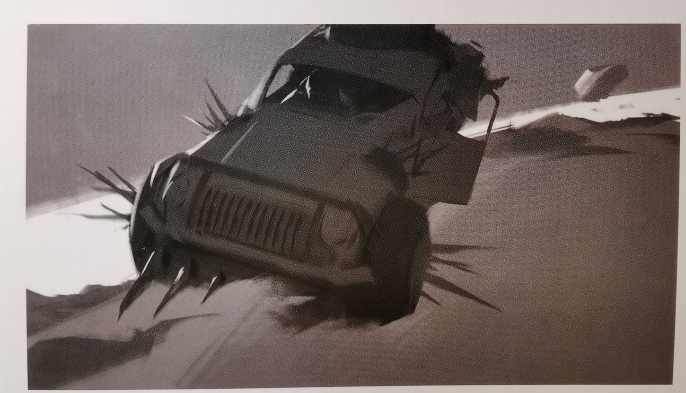
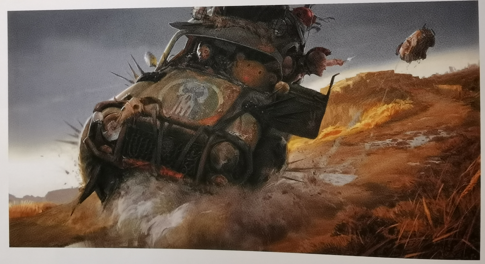

4.审美与构成
2.层级关系
层级关系,明度和面积大小之间的关系对比.维持对比关系的情况下细化图像

如果破坏了对比关系则会马上觉得混乱了

原则是子关系继承并丰富父关系,但并不破坏付父关系整体对比,这叫做层级关系的协调.
1.先确定父对象的整体关系

2.细化子对象的整体关系

3.继续往下丰富直到完成,整体关系协调统一

绘制暴力汽车
小熊在绘制好地面之后,打开了小画板,打算画一个车车,首先他确定车车是比较亮的,先确定画面的父对象关系,然后按照这个关系,在里面继续细化了车轮,车窗等等,最后在这个小的关系里面继续细化,做到有变化的非线性分布凸出重点.